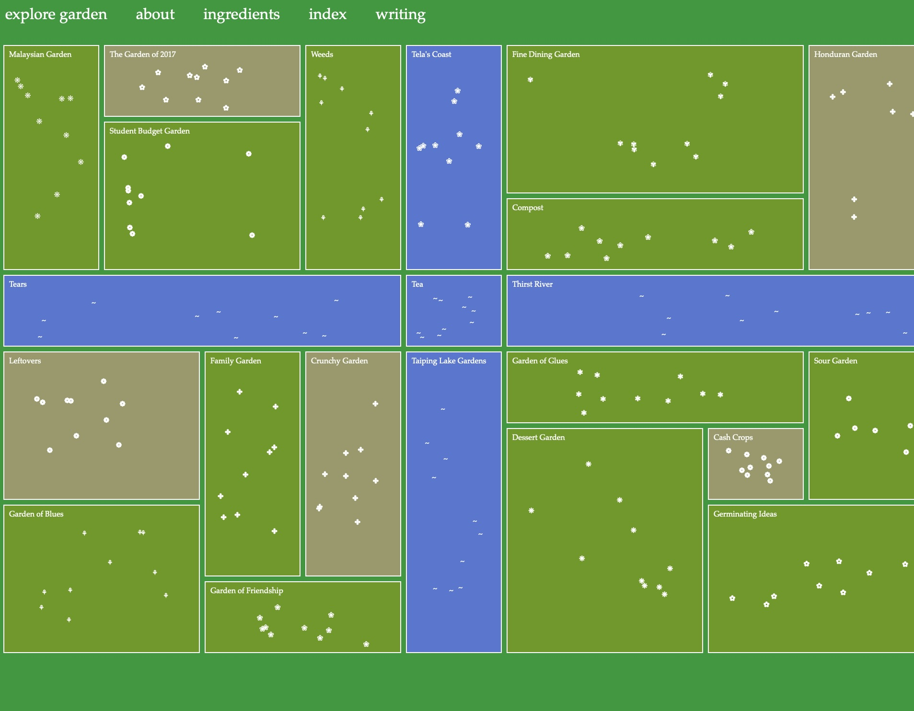
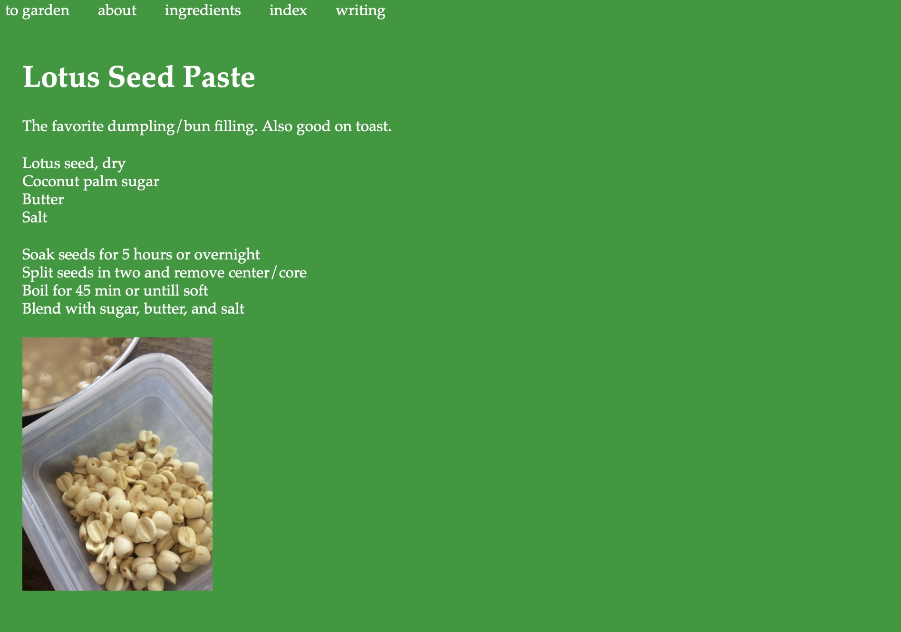

첫 화면
클릭했을 때
디자인 분석
녹색과 파란색 사각형을 사용해 위에서 본 정원과 강을 디자인했다. 십자 모양의 강이 흐르고 정원에는 꽃들이 있다. 꽃을 클릭하면 화면이 이동한다. 클릭할 때마다 꽃의 위치가 바뀌고 이동하는 화면도 바뀐다. 어떤 정원을 클릭하면 사진 없이 글로만 조리법을 알려주고, 또 다른 정원의 꽃을 클릭하면 사진과 함께 조리법을 알려준다. 메모장에 쓴 조리법, 직접 손으로 쓴 조리법 등 다양한 방법으로 조리법을 알려준다. 우정, 가족, 차, 학생 예산 등과 같은 제목의 정원이 있는데 제목에 어울리는 음식의 조리법이 들어있다. 상단에는 사이트의 설명과 클릭했을 때 나오는 전체 조리법을 한 번에 볼 수 있다.
돌아가기